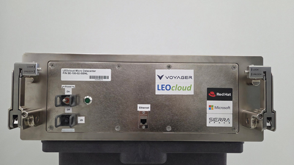
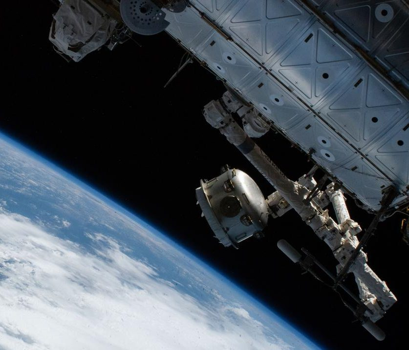

Voyager Technologies (VOYG)
W kontekscie: Fizyka orbitalna, orbity i operacje
Czym jest spółka. Voyager Technologies to amerykański, pionowo zintegrowany dostawca technologii kosmicznych i obronnych, który wszedł na NYSE w czerwcu 2025 r. (IPO: 14 200 645 akcji po 31 USD, ok. 440 mln USD brutto; netto ok. 402,3 mln USD wg komunikatu o zamknięciu oferty, przy czym 10-K wykazuje wpływy z IPO netto od kosztów subemisji w wysokości 409,4 mln USD - 🔵 komunikat o zamknięciu IPO oraz 10-K z 10 marca 2026). Firma zbudowała się przez 12 akwizycji od 2019 r. (m.in. Nanoracks, Altius, Space Micro, ZIN Technologies, ExoTerra, LEOcloud - 🔵 10-K, Item 1 Business). W FY 2025 raportowała trzy segmenty: Defense and National Security, Space Solutions oraz Starlab Space Stations; od Q1 2026 spółka połączyła dwa pierwsze w jeden segment Defense and Space Technologies i raportuje już tylko dwa segmenty (Defense and Space Technologies oraz Starlab Space Stations), przez co Space Solutions nie jest dalej wykazywane oddzielnie (🔵 earnings release Q1 2026, 4 maj 2026). W kontekście fizyki orbitalnej najistotniejszym aktywem jest Starlab - komercyjna stacja kosmiczna projektowana jako następca Międzynarodowej Stacji Kosmicznej (ISS) po jej planowanej deorbitacji, z startem przewidzianym na 2029 r. (🔵 10-K, Item 1 Business).
Dlaczego to ważne dla orbitalnych centrów danych. Starlab to obiekt klasy stacji na LEO (niska orbita okołoziemska, ~200-2 000 km), a więc na tej samej orbicie, na której dziś operuje ISS i większość nowych konstelacji. Stacja na LEO daje to, czego pojedynczy satelita nie ma: dużą, obsługiwaną przez ludzi platformę z zasilaniem, chłodzeniem, miejscem na ładunki i regularnym dostępem logistycznym. To czyni ją naturalnym kandydatem na hosting infrastruktury obliczeniowej dużej skali - co rozwija wątek Skalowanie mocy do MW-GW: liczba modułów na 1 MW, gęstość upakowania.
Sposób budowy Starlab odróżnia Voyager od części konkurencji. Część architektur orbitalnych zakłada in-space assembly - montaż modułów dopiero na orbicie, by obejść ograniczenie średnicy owiewki (fairingu) rakiety. Starlab w obecnym projekcie ma być wynoszony jako duży moduł na ciężkiej rakiecie (SpaceX Starship wskazany jako nośnik), co minimalizuje liczbę krytycznych operacji montażowych na orbicie - to wprost dotyka kompromisu opisanego w Montaż on-orbit / in-space assembly vs wynoszenie gotowych modułów, ograniczenie fairingu. Każda stacja na LEO musi też mierzyć się z oporem atmosferycznym i utrzymaniem orbity, co wiąże się z napędem i paliwem - kontekst rozwinięty w Opór atmosferyczny (drag), station-keeping, napęd i paliwo.
Dla inwestora: Starlab to opcja, nie dzisiejszy przychód - na 31 grudnia 2025 r. segment Starlab Space Stations wykazał 0 USD przychodów (🔵 earnings release Q4 2025, TABLE 1). Środki NASA na rozwój płyną w ramach Space Act Agreement i są traktowane jako granty, nie sprzedaż. Wartość tego aktywa to przyszły potencjał uzależniony od startu w 2029 r., a nie bieżący strumień pieniędzy.
Voyager wnosi też kompetencje czysto orbitalno-operacyjne z przejętych spółek. ExoTerra dostarcza silnik Halo typu Hall-effect (model Halo 8: masa 0,83 kg, ciąg 4-30 mN, Isp 700-1500 s; mN to milinewton - jednostka ciągu, Isp to impuls właściwy w sekundach; starszy Halo miał masę 0,65 kg i ciąg 4-33 mN; heritage na DARPA Blackjack, 21 modułów dla York Space Systems / SDA Transport Layer - 🔵 press release ExoTerra/Voyager, paź 2025; 🟠 strona produktu ExoTerra), co jest dokładnie tym rodzajem napędu, który służy do station-keeping i korekt orbity. Altius wniósł standardy interfejsów do dokowania i serwisowania - DogTag (ponad 500 szt. na satelitach OneWeb) oraz MagTag (🟠/🔵 Factories in Space; NASA SOA 2025).
Materiały spółki
Grafiki z materiałów spółki / IR (prawa właściciela, użycie redakcyjne). Pełny rejestr:
Spolki/assets/_licencje.json.

1. Space Edge™ na ISS - ilustracja produktu. Źródło: materiały spółki / IR; licencja: materiały spółki / IR - prawa właściciela, użycie redakcyjne.

2. Bishop Airlock - overview / ilustracja główna. Źródło: materiały spółki / IR; licencja: materiały spółki / IR - prawa właściciela, użycie redakcyjne.
3. Bishop Airlock - schemat satellite deployment. Źródło: materiały spółki / IR; licencja: materiały spółki / IR - prawa właściciela, użycie redakcyjne.
W kontekscie: Niezawodność, serwisowanie i cykl życia sprzętu
Platforma długiego życia kontra mrożony sprzęt. Centralny problem orbitalnego centrum danych to fakt, że na orbicie nie ma napraw in-situ ani wymiany kart na żywo (hot-swap), a sprzęt obliczeniowy starzeje się szybciej, niż żyje platforma kosmiczna. To napięcie jest sednem wątku Cykl odświeżania GPU (~3-5 lat na Ziemi) a nieserwisowalna orbita ("frozen hardware"). Voyager podchodzi do tego z dwóch stron: po pierwsze, Starlab jako stacja obsługiwana przez ludzi i z dostępem logistycznym daje (przynajmniej teoretycznie) możliwość wymiany całych modułów ładunkowych, co wpisuje się w Deorbitacja i wymiana całych modułów a upgrade; po drugie, przez Altius firma rozwija technologie robotycznej obsługi i dokowania, które są warunkiem brzegowym life extension satelitów - kontekst opisany w Brak napraw in-situ a robotyczna obsługa (Northrop Grumman MEV i następcy).
Heritage jako bariera niezawodnościowa. Voyager opiera narrację na dziedzictwie lotnym: marketingowo deklaruje ponad 35 lat dziedzictwa kosmicznego w przejętych podmiotach, ponad 1 400 misji zarządzanych na ISS i ponad 2 000 udanych misji (🔵/🟠 strona IR i press releases). Bishop Airlock - pierwszy stały komercyjny moduł na ISS od 2020 r., o ok. 5× większej pojemności niż śluzy rządowe (🔵 strona produktu VOYG) - jest konkretnym przykładem zdolności operowania trwałym sprzętem na ISS. To buduje pozycję w obszarze niezawodności klasy misji, choć nie przekłada się jeszcze na deklarowane SLA klasy data center.
Dla inwestora: flagowy produkt obliczeniowy Voyager - Space Edge - to dziś niskomocowa platforma wielkości pudełka po butach, wdrożona na ISS 14 września 2025 r. (🔵 press release VOYG, 15 wrz 2025). Spółka chwali się 30-krotnym przyspieszeniem przetwarzania na orbicie wobec tradycyjnego downlinku do naziemnego DC, ale nie publikuje parametrów niezawodności (uptime, redundancja N+1, deklarowane SLA) ani specyfikacji sprzętu (CPU/GPU, TOPS, moc w watach, pamięć, storage, wymiary poza opisem "low-power"/"shoebox-sized"): te pozycje są NIE UJAWNIONE, co potwierdza także prasa branżowa (🟠 The Register, 12 maj 2026). Dla inwestora oznacza to, że teza o "centrum danych w kosmosie" pozostaje na etapie demonstratora, nie produktu o gwarantowanej dostępności.
Sprzętowo Voyager dysponuje też liniami związanymi z orientacją i nawigacją: Vantage (kamery, star trackery, sun sensory) z dziedzictwem GEO, z cenami VantageCam 104-130 tys. USD i VantageStar 128-250 tys. USD oraz zgodnością NDAA 2021 dla sourcingu krajowego (🔵 strona produktu VOYG). To komponenty, które decydują o precyzji utrzymania orientacji platformy przez cały cykl życia - element niezawodności, którego nie widać w bilansie, ale który determinuje żywotność misji.
W kontekscie: Gracze i projekty
Pozycja jako kandydat na operatora infrastruktury orbitalnej. W krajobrazie graczy ścigających się o obliczenia na orbicie Voyager zajmuje miejsce odmienne od czysto-software'owych start-upów GPU. Nie buduje (na razie) satelitów napakowanych kartami H100; buduje platformę - Starlab - która może stać się hostem dla cudzej i własnej infrastruktury obliczeniowej. To plasuje go bliżej operatorów stacji niż dostawców mocy obliczeniowej, co warto czytać równolegle z mapą graczy w Mniejsi i sąsiedni gracze - cloud-OEM stack, GEO, Księżyc, Europa.
Bezpośrednim rywalem o tę samą rolę "następcy ISS" jest Axiom Space, który również rozwija moduły obliczeniowe na ISS i własną przyszłą stację. To najbliższy lustrzany konkurent Voyager pod względem heritage ISS i ambicji stacyjnych. Z drugiej strony spektrum stoją gracze masowi - StarCloud (dawniej Lumen Orbit) z orbitalnym demonstratorem (1 satelita) na NVIDIA H100 oraz Kepler Communications z siecią obliczeniową na orbicie - którzy iterują szybciej, ale bez kosmicznego track recordu Voyager. Szersze tło tej rywalizacji, w tym wejście hyperscalerów, opisuje StarCloud (dawniej Lumen Orbit) - działający demonstrator z NVIDIA H100 oraz wątek o Google Google - Project Suncatcher (TPU na orbicie, partner Planet Labs, demo ~2027).
Partnerstwa jako waluta. Voyager zbudował sieć partnerstw obejmującą m.in. NASA (ISS, Starlab), Airbus, Mitsubishi, MDA Space, Palantir, Northrop Grumman, Red Hat, Hilton i The Ohio State University (🔵 10-K i press releases). Dla warstwy obliczeniowej kluczowe jest partnerstwo z Red Hat: w maju 2026 r. ogłoszono wdrożenie Red Hat Enterprise Linux 10.1 oraz UBI na Space Edge (🔵 press release VOYG, 11 maj 2026), co przybliża platformę do standardowego, korporacyjnego stosu chmurowego. Historyczne partnerstwa LEOcloud sprzed przejęcia obejmowały Microsoft (Azure Space), Sierra Space i Axiom (🟠 Factories in Space), co pokazuje, że Space Edge od początku celował w model "multi-cloud region in space".
W warstwie stacyjnej krąg partnerów Starlab dalej się poszerza: 20 listopada 2025 r. JV pozyskało strategiczną inwestycję od Janus Henderson, a 12 stycznia 2026 r. Mitsubishi Corporation dołączyło jako duży klient stacji (🔵 Starlab Space - press release Janus Henderson, 20 lis 2025; 🔵 Voyager - press release Mitsubishi, 12 sty 2026). Dokładne procenty udziałów partnerów po kolejnych transzach pozostają jednak NIE UJAWNIONE: prospekt S-1 z maja 2025 r. wskazywał szacunkowo Voyager 67%, Airbus 30,5%, Palantir 1%, Mitsubishi 0,8% i MDA 0,8% (🟠 Washington Technology, 19 maj 2025), lecz 10-K na 31 gru 2025 r. podaje już tylko udział Voyager 61,9%, a kwot inwestycji Janus Henderson i Mitsubishi spółka nie ujawniła.
Dla inwestora: Starlab jako potencjalny hosting compute to opcja drugiego rzędu - najpierw musi powstać i polecieć (start 2029, koszt budowy 2,8-3,3 mld USD wg 🔵 10-K / 🟠 Washington Technology). Dopiero stacja w eksploatacji może oferować moc, chłodzenie i wolumen dla infrastruktury obliczeniowej. Do tego czasu pozycja Voyager w "gracze i projekty" opiera się na heritage i partnerstwach, nie na działającej orbitalnej fabryce obliczeń.
Ekspozycja na temat w liczbach
Skala i dynamika. W FY 2025 (rok zakończony 31 grudnia 2025; 🔵 earnings release, 9 mar 2026) Voyager osiągnął przychody 166,4 mln USD (+15% r/r), a w samym Q4 2025 46,7 mln USD (+24% r/r). Po wyłączeniu efektu wygaszania (wind-down) wieloletniego kontraktu NASA w segmencie Space Solutions wzrost wyniósłby +27% r/r (FY) i +46% r/r (Q4) - reszta portfela rosłaby więc szybciej, niż pokazuje to liczba zbiorcza (🔵 earnings release Q4 2025). Spółka pozostaje głęboko nierentowna: skonsolidowana strata netto FY 2025 to (112,3) mln USD, a strata przypadająca na akcjonariuszy zwykłych (116,1) mln USD (na której oparta jest strata na akcję (2,89) USD; 🔵 10-K, Consolidated Statements of Operations), skonsolidowany Adjusted EBITDA (69,9) mln USD, a wolny przepływ pieniężny (FCF) (155,2) mln USD (🔵 earnings release Q4 2025, TABLE 2 i TABLE 3).
Reakcja rynku po debiucie (kontekst faktograficzny, nie wycena). W dniu wyceny IPO (10 cze 2025) kapitalizacja w pełni rozwodniona była rzędu ok. 1,9 mld USD, a po pierwszym dniu notowań (11 cze 2025, kurs zamknięcia 56,48 USD) wycena rynkowa sięgnęła ok. 3,8 mld USD (🟠 Morningstar / Reuters, 11-12 cze 2025; 🟠 Renaissance Capital, 10 cze 2025). Późniejsze punkty: kapitalizacja ok. 2,31 mld USD na 30 cze 2025 (EV ok. 2,63 mld USD) i ok. 1,56 mld USD na 31 gru 2025 (🟠 Yahoo Finance; 🟠 stockanalysis.com). Agregatory różnie traktują dług i liczbę akcji w pełni rozwodnionych po emisji obligacji zamiennych z listopada 2025, więc te wartości należy czytać jako punkty orientacyjne z danego dnia, a nie spójny szereg czasowy.
Nowszy kwartał (Q1 2026). Po dacie wyników rocznych spółka opublikowała wyniki Q1 2026 (🔵 earnings release Q1 2026, 4 maj 2026): przychody 35,2 mln USD (+2,1% r/r), strata netto przypadająca na Voyager (44,0) mln USD, strata na akcję (0,75) USD (Adjusted EPS (0,61) USD), Adjusted EBITDA (33,3) mln USD, free cash flow (66,8) mln USD (net cash used in operating activities (39,7) mln USD, zakupy PPE 51,1 mln USD pomniejszone o grant funding 24,0 mln USD), backlog 275,3 mln USD (+54% r/r), bookings 45,2 mln USD (book-to-bill 1,3), gotówka 429,4 mln USD i płynność łączna 641,4 mln USD (w tym 212 mln USD dostępnego kredytu obrotowego). W ujęciu segmentowym przychód Defense and Space Technologies to 35,2 mln USD po eliminacjach międzysegmentowych (0,9 mln USD; brutto segmentu 36,2 mln USD), a Starlab Space Stations 0 USD (🔵 earnings release Q1 2026, TABLE 1). Spółka podniosła guidance przychodów na 2026 r. do 230-255 mln USD (+38-53% r/r) (z 225-255 mln USD), z gross margin w okolicy mid-teens, CapEx bez Starlab 60-70 mln USD i IRAD ok. 20% przychodu (🔵 earnings presentation Q1 2026, slajd 11). Od tego kwartału obowiązuje też nowa struktura dwóch segmentów (Defense and Space Technologies oraz Starlab Space Stations).
xychart-beta
title "Struktura przychodow Voyager FY 2025 (mln USD)"
x-axis ["Defense & Nat. Security", "Space Solutions", "Starlab"]
y-axis "mln USD" 0 --> 140
bar [123.0, 47.6, 0]
Rys. - Dwa filary przychodów; Starlab nie generuje jeszcze sprzedaży. Suma słupków (123,0 + 47,6 = 170,6 mln USD) jest wyższa od przychodu skonsolidowanego 166,4 mln USD o eliminacje miedzysegmentowe (4,1) mln USD (drobne różnice z zaokrągleń). Dane: 🔵 Voyager earnings release Q4 2025, TABLE 1.
Ile z tego to orbitalne centra danych? NIE UJAWNIONE wprost. Voyager nie raportuje przychodów ze Space Edge ani z orbitalnych centrów danych osobno. Najlepsze proxy to cały segment Space Solutions: 47,6 mln USD, czyli 28,6% przychodów FY 2025 (🔵 earnings release Q4 2025) - w nim mieszczą się propulsja, systemy GNC (guidance, navigation and control - prowadzenie, nawigacja i sterowanie), komunikacja, Bishop Airlock, zarządzanie misjami oraz - od kwietnia 2025 r. - Space Edge / LEOcloud. Wewnątrz tego segmentu Space Edge to nowa, nieraportowana linia; przejęcie LEOcloud opisano jako "for an immaterial amount of cash consideration" (🔵 10-Q Q2 2025). Zewnętrzny, niepotwierdzony przez spółkę szacunek wartości akwizycji LEOcloud na 325 mln USD pochodzi z multiples.vc i stoi w sprzeczności z oficjalnym opisem transakcji jako "for an immaterial amount of cash consideration" w 10-Q Q2 2025; należy go traktować jako spekulację rynkową (🔴 - traktować ostrożnie).
xychart-beta
title "Przychody segmentow FY 2025 (mln USD)"
x-axis ["Defense & Nat. Security", "Space Solutions"]
y-axis "mln USD" 0 --> 140
bar [123.0, 47.6]
Rys. - Rdzeń biznesu to obronność (123,0 mln USD; 73,9 proc. przychodu skonsolidowanego), Space Solutions to 47,6 mln USD (28,6 proc.). Udziały te sumują się do 102,5 proc., bo dopiero eliminacje miedzysegmentowe (4,1) mln USD (-2,5 proc.) sprowadzają sumę do 100 proc. przychodu skonsolidowanego 166,4 mln USD. Dane: 🔵 Voyager earnings release Q4 2025, TABLE 1.
Dynamika niszy. Segment Space Solutions - dom dla orbitalnych centrów danych - skurczył się o 36% r/r w FY 2025 i 29% r/r w Q4 2025 (🔵 earnings release Q4 2025), głównie przez planowane zakończenie wieloletniej usługi NASA. To paradoks ekspozycji: linia tematyczna - orbitalne centra danych (orbital data centers, ODC) - jest emergentna i rosnąca, ale siedzi w segmencie, który jako całość się kurczy.
Dla inwestora: ekspozycja Voyager na orbitalne centra danych jest dziś poboczna i emergentna - mieści się w segmencie Space Solutions, który odpowiada za 28,6% przychodów FY 2025 i dodatkowo spada r/r. Twardego strumienia pieniędzy z ODC po prostu nie ma; jest demonstrator na ISS i obietnica przyszłej linii ("unlocking new revenue streams"). Rdzeń przychodów (73,9%) to obronność i bezpieczeństwo narodowe, nie kosmiczne obliczenia.
Kluczowe umowy/wdrozenia - co znacza
- Space Edge na ISS (wrzesień 2025): wdrożenie - według spółki pierwszej - "multi-cloud region in space" 14 września 2025 r.; spółka deklaruje 30× szybsze przetwarzanie na orbicie niż downlink do naziemnego DC (🔵 press release VOYG, 15 wrz 2025). To dowód działania, nie kontrakt komercyjny - przychód z tej linii pozostaje NIE UJAWNIONY.
- Red Hat (maj 2026): wdrożenie RHEL 10.1, Podman i Ansible na Space Edge (🔵 press release VOYG, 11 maj 2026). Znaczenie: przeniesienie standardowego, korporacyjnego stosu chmurowego na orbitę obniża barierę adopcji dla klientów enterprise.
- ISS National Lab / CASIS: demonstracja Space Edge na ISS dzięki wsparciu Center for the Advancement of Science in Space (🟠 SpaceNews via Factories in Space, maj 2024).
- AFRL Regional Network - Mid-Atlantic (2024): grant na multi-cloud edge computing w kosmosie (🟠 Factories in Space). Wskazuje na obronnego/rządowego sponsora wczesnej fazy ODC.
- Bishop Airlock (od 2020): pierwszy stały komercyjny moduł na ISS, ok. 5× większa pojemność niż śluzy rządowe (🔵 strona produktu VOYG) - dowód operacyjnej zdolności hostowania ładunków.
- ExoTerra Halo (przejęcie paź 2025): silnik Hall-effect z heritage DARPA Blackjack, 21 modułów dla York / SDA Transport Layer (🔵 press release; 🟠 ExoTerra). Wzmacnia bus satelitarny i zdolności napędowe.
- Altius (DogTag/MagTag/Bulldog): standardy dokowania i serwisowania, ponad 500 DogTagów na satelitach OneWeb (🟠/🔵 Factories in Space; NASA SOA 2025) - fundament przyszłego on-orbit servicing.
Backlog. Łączny backlog na 31 grudnia 2025 r. to 265,6 mln USD (+33% r/r), w tym funded backlog 146,1 mln USD i unfunded (opcje, ID/IQ) 119,5 mln USD (🔵 earnings release Q4 2025). To rekordowy poziom, ale jego struktura jest silnie skoncentrowana na kliencie rządowym (patrz: koncentracja odbiorców).
Dla inwestora: żadna z umów ODC nie ma ujawnionej wartości ani modelu przychodowego - są to demonstratory i granty, nie kontrakty offtake. Twardy backlog (265,6 mln USD) napędza obronność i Bishop, a nie orbitalne centra danych. Umowy obliczeniowe to dziś sygnał kierunku, nie strumień pieniędzy.
Pozycja rynkowa i udzialy
Udział rynkowy: NIE UJAWNIONY. Voyager nie podaje swojego udziału w rynku orbitalnych centrów danych. Sam rynek jest wczesny i niespójnie definiowany przez analityków, co widać po rozrzucie szacunków:
| Definicja rynku | 2025 | 2030+ | CAGR | Źródło |
|---|---|---|---|---|
| Space-based data center | 1,28 mld USD | 3,81 mld USD (2034) | 12,96% | 🟠 Fortune Business Insights, maj 2026 |
| Orbital data center | 1,8 mld USD | 12,6 mld USD (2034) | 24,1% | 🟠 Dataintelo, wrz 2025 |
| Edge computing in space | 3,8 mld USD | 18,6 mld USD (2034) | - | 🟠 Dataintelo, wrz 2025 |
Rozjazd 1,28-3,8 mld USD na rok 2025 sam w sobie jest komunikatem: to rynek na etapie definiowania, gdzie liczby zależą od tego, co się do nich wlicza. Według Dataintelo top 5 graczy ODC (Microsoft, AWS, Northrop Grumman, Lockheed Martin, Thales) trzyma łącznie 52,7% rynku w 2025 r. (🟠 Dataintelo) - co istotne, Voyager nie figuruje w tej piątce, co potwierdza jego status pretendenta, nie lidera w samej niszy ODC.
Twardy fakt zamiast szacunku. Pozycję Voyager najlepiej oddaje skala operacyjna i heritage: 800 pracowników na koniec 2025 r. (wzrost z ok. 500 na początku roku), 12 akwizycji od 2019 r., szósty patent związany z Bishop/Starlab ogłoszony w lutym 2026 r. (🔵 10-K; 🟠 Yahoo Finance, 13 lut 2026). To pozycja zintegrowanego operatora infrastruktury, a nie wyspecjalizowanego dostawcy mocy obliczeniowej.
Dla inwestora: w samym rynku ODC Voyager jest pretendentem bez ujawnionego udziału, spoza analitycznego top 5. Jego realna pozycja siły leży gdzie indziej - w obronności i w roli potencjalnego następcy ISS (Starlab) - a nie w dzisiejszych obliczeniach na orbicie.
Mechanika konkurencji - na osiach
Voyager konkuruje na trzech osiach: heritage/time-to-market, model produktu (premium mission-critical vs masowy compute-as-a-service) oraz wydajność platformy.
| Konkurent | Status 2025/2026 | Na czym konkuruje | Liczby / funding |
|---|---|---|---|
| Axiom Space | Operacyjny; ODC nodes na ISS + przyszła stacja | Stacja kosmiczna, węzły ODC, łącza optyczne 2,5-10+ Gbps | Szac. revenue 318 mln USD, funding 480 mln USD, wycena ~1 mld USD, 904 prac. (🟠 Compworth) |
| Kepler Communications | Operacyjny (10 sat) + drugi tranche | On-orbit compute przez optyczne łącza międzysatelitarne, multi-GPU | Funding 233+ mln USD; 100 Gbps w 2. tranche (🟠 Introl, luty 2026) |
| StarCloud (d. Lumen Orbit) | Demonstrator orbitalny (1 sat) | Satelity GPU (NVIDIA H100), plan 88 000 satelitów | 21 mln USD seed; StarCloud-2 plan. paź 2026 (🟠 Introl) |
| Northrop Grumman | Operacyjny | Robotyczna obsługa orbitalna (MEV), wielki integrator obronny | W top 5 ODC wg 🟠 Dataintelo |
| Airbus | Operacyjny | Wielki europejski integrator kosmiczny; partner i rywal | NIE UJAWNIONE w F1 |
| Thales Alenia Space (ASCEND) | Faza studiów (Phase A-B) | Europejski ODC; 50 kW proof-of-concept plan. 2031, 1 GW do 2050 | 🟠 Vixra paper, paź 2025 |
| SpaceX / xAI | Wniosek regulacyjny (FCC filing) | Deklarowana potencjalna skala do 1 000 000 satelitów data-center | Wycena połączonego podmiotu ~1,25 bln USD (🟠 Introl); nie jest to wycena samego projektu ODC |
Uwaga: liczby finansowe konkurentów (revenue, funding, wyceny, liczba satelitów) pochodzą z portali analitycznych (🟠 Compworth, Introl) i są niezależnymi szacunkami stron trzecich, niepotwierdzonymi w raportach IR/SEC tych spółek.
Oś ceny i modelu. Kepler i StarCloud celują w masowy compute-as-a-service; Voyager startuje od premium, mission-critical, klienta obronnego. To dwie różne strategie wejścia - Voyager nie konkuruje (na razie) ceną za FLOPS.
Oś wydajności. Space Edge to niskomocowa platforma wielkości pudełka; StarCloud i Kepler stawiają na GPU klasy H100 i wyższe FLOPS. Na czystej mocy obliczeniowej Voyager dziś nie wygrywa.
Oś heritage i time-to-market. Tu Voyager i Axiom mają najsilniejsze dziedzictwo ISS; StarCloud i OrbitsEdge iterują szybciej w warstwie software/commercial, ale bez kosmicznego track recordu. To jedyna oś, na której przewaga Voyager jest dziś wyraźna.
Dla inwestora: Voyager wygrywa heritage i zaufaniem klienta rządowego, a przegrywa (lub jeszcze nie gra) na czystej wydajności obliczeniowej i masowym modelu cenowym. Jego konkurencyjność w ODC zależy od tego, czy heritage stacyjne (Starlab) zdąży zamienić się w realną platformę, zanim gracze GPU zdominują wolumen.
Koncentracja odbiorcow i ryzyka z mechanizmem
Koncentracja na rządzie USA jest skrajnie wysoka. W FY 2025 86,0% przychodów pochodziło od rządu USA (USG), wobec 83,9% w FY 2024 (czyli zależność rośnie), a NASA była największym pojedynczym klientem (25,6% w 2024 r.); dodatkowo 86,3% funded backlog na koniec 2025 r. pochodzi od jednego klienta - USG (🔵 10-K, Item 1A Risk Factors, 10 mar 2026; 🟠 Washington Technology, 19 maj 2025). Dokładny udział NASA w przychodach FY 2025 pozostaje NIE UJAWNIONE (spółka podaje tylko zbiorczy udział USG).
pie title Zrodlo przychodow FY 2025 wg typu klienta (proc.)
"Rzad USA (USG)" : 86
"Pozostali (komercyjni i miedzynarodowi)" : 14
Rys. - Niemal cały przychód zależy od jednego typu klienta. Dane: 🔵 Voyager 10-K (FY 2025), Risk Factors.
Mechanizm ryzyka jest bezpośredni: zmiana priorytetów, shutdown lub redukcja budżetu NASA/DoD uderza wprost w przychody i backlog, bez bufora komercyjnego. Ponieważ to ten sam klient finansuje rozwój Starlab przez Space Act Agreement, decyzja budżetowa Waszyngtonu może jednocześnie ściąć i bieżący przychód, i przyszłą opcję stacyjną.
Pozostałe ryzyka z mechanizmem.
- Wykonanie i kapitałochłonność Starlab. Koszt budowy 2,8-3,3 mld USD, start 2029, przewidywana żywotność 30 lat, brak przychodów do startu (🔵 10-K FY 2025, Item 1 Business, 10 mar 2026; 🟠 Washington Technology). Udział Voyager w spółce JV Starlab to 61,9% na 31 gru 2025 r.; wkład Voyager do JV to "certain contracts, intellectual property and 11,5 mln USD w gotówce" (🔵 10-K FY 2025). Każdy z partnerów JV jest zobowiązany dołożyć do 10,0 mln USD, jeśli saldo gotówki JV spadnie poniżej 10,0 mln USD i nie będzie dostępnego finansowania zewnętrznego (🔵 10-K FY 2025). Finansowanie zewnętrzne pod Starlab obejmuje: grant NASA Commercial LEO Destinations (CLD) Phase I o łącznej wartości 217,5 mln USD, z którego do Q1 2026 odebrano inception-to-date 207,0 mln USD, więc pozostaje ok. 10,5 mln USD (🔵 earnings presentation Q1 2026, slajd 9, 5 maj 2026); wkład Airbus do 80,0 mln USD w ramach "funded grant programs specifically for Starlab" oraz 15,0 mln USD od Texas Space Commission w 2025 r. (🔵 10-K FY 2025). NASA CLD Phase II (usługi crew/cargo) nie została jeszcze przyznana - spółka zamierza konkurować, ale "there can be no assurance that Starlab will be selected for CDFF Phase II" (🔵 10-K FY 2025, Risk Factors); zarząd w callu Q1 2026 sygnalizował, że kolejna faza NASA jest dopiero na etapie information-request, o niepewnej strukturze i czasie (🟠 TipRanks, 8 maj 2026). Pro-rata przy 61,9% udziału i koszcie 2,8-3,3 mld USD daje teoretyczne obciążenie Voyager rzędu ~1,73-2,04 mld USD, ale rzeczywista kwota będzie zależeć od grantów, wkładów partnerów i project finance - capex Starlab przypadający na Voyager pozostaje NIE UJAWNIONE (spółka raportuje CapEx wyłącznie bez Starlab: 60-70 mln USD w 2026). Kontrakt startowy ze SpaceX dotyczy pojedynczego startu Starshipem, ale jego cena, data i klauzule pozostają NIE UJAWNIONE (🔵 10-K FY 2025). Opóźnienie lub niepowodzenie oznacza odpisy, konieczność dodatkowego kapitału i rozwodnienie akcjonariuszy.
- Wind-down NASA w Space Solutions. Segment spadł o 36% r/r; gdyby nie wzrost Defense (+59% r/r FY), cała spółka byłaby w recesji przychodowej (🔵 earnings release Q4 2025).
- Rentowność po IPO / burn rate. FY 2025: FCF (155,2) mln USD, środki netto zużyte w działalności operacyjnej (60,9) mln USD; spółka wprost ostrzega, że będzie ponosić straty przez kolejne lata (🔵 earnings release Q4 2025, TABLE 3). Bufor: gotówka 491,3 mln USD i płynność łączna 704,7 mln USD na 31 gru 2025, ale po stronie pasywów obligacje zamienne o nominale 435 mln USD (emisja z listopada 2025, z opcją dodatkowych 65 mln USD) i wartości księgowej netto 447,6 mln USD na 31 gru 2025 (🔵 komunikat o emisji / earnings release / 10-K).
- Single-source / ograniczeni dostawcy. Kompozyty, IMU, struktury, sieć naziemna - awaria dostawcy oznacza opóźnienia, wyższe koszty i niższą marżę (🔵 10-K, Risk Factors).
- Rozwodnienie i struktura akcji. Obligacje zamienne o nominale 435 mln USD (wartość księgowa netto 447,6 mln USD), RSA, opcje; klasa B Dylana Taylora daje kontrolę głosów (🔵 10-K; 10-Q Q3 2025). To ryzyko ładu korporacyjnego i przyszłego rozwodnienia.
- Regulacje i eksport. ITAR, EAR, spektrum FCC, cła na komponenty międzynarodowe (🔵 10-K, Risk Factors).
- Ryzyko technologiczne ODC. Space Edge jest wczesnym produktem bez skalowalnego modelu przychodowego, w obliczu hyperscalerów (Microsoft, AWS, Google) i graczy GPU (StarCloud, Kepler) - 🟠 Dataintelo, Introl, Fortune Business Insights.
Dla inwestora: profil ryzyka Voyager jest zdominowany przez jeden klucz - zależność od finansowania rządu USA (86% przychodów, 86,3% funded backlog, NASA jako sponsor Starlab). Niemal każda ścieżka ryzyka (wind-down, Starlab, burn rate) prowadzi z powrotem do decyzji budżetowych USG. To koncentracja, której nie da się zdywersyfikować przez wzrost komercyjny w krótkim terminie.
Powiązane spółki
Inne notowane spółki z raportu dzielące z tą firmą co najmniej jeden wątek tematyczny (wspólny rynek, technologia lub łańcuch wartości).
- Rocket Lab Corporation (RKLB) - Launch (Electron/Neutron) + Space Systems: bus, ogniwa SolAero, komponenty
Wspólne wątki: Fizyka orbitalna; Niezawodność i serwisowanie; Gracze i projekty. - Airbus SE (AIR) - PV (Sparkwing), optyka (Tesat), busy, serwis (EU)
Wspólne wątki: Fizyka orbitalna; Niezawodność i serwisowanie. - Lockheed Martin Corporation (LMT) - Busy satelitarne, serwisowanie, ULA (launch)
Wspólne wątki: Fizyka orbitalna; Niezawodność i serwisowanie. - MDA Space Ltd. (MDA) - Robotyka kosmiczna (Canadarm), busy, anteny
Wspólne wątki: Fizyka orbitalna; Niezawodność i serwisowanie. - Northrop Grumman Corporation (NOC) - Serwis GEO (MEV/MRV), busy, radiatory, ogniwa
Wspólne wątki: Fizyka orbitalna; Niezawodność i serwisowanie. - Redwire Corporation (RDW) - Panele ROSA, struktury rozkładane, montaż on-orbit, radiatory Q-Rad
Wspólne wątki: Fizyka orbitalna; Niezawodność i serwisowanie. - Alphabet Inc. (GOOGL) - Project Suncatcher (TPU na orbicie)
Wspólne wątki: Gracze i projekty. - Astroscale Holdings Inc. (186A) - Pure-play serwisowanie i usuwanie śmieci (ADR)
Wspólne wątki: Niezawodność i serwisowanie. - NVIDIA Corporation (NVDA) - Akceleratory GPU (COTS) - ładunek obliczeniowy on-orbit
Wspólne wątki: Gracze i projekty. - Planet Labs PBC (PL) - Partner Google Suncatcher (platformy/obrazowanie)
Wspólne wątki: Gracze i projekty. - RTX Corporation (RTX) - ADCS (Blue Canyon), termika (Collins Aerospace)
Wspólne wątki: Fizyka orbitalna.
Slowniczek
Hasła ogólne odsyłają do wspólnego słownika vaultu: in-space assembly, bus satelitarny, life extension, backlog, de-SPAC, LEO, hyperscaler, station-keeping.
Lokalne hasła specyficzne dla Voyager:
- Space Edge - "space-hardened, managed cloud infrastructure" Voyager; według spółki pierwsza multi-cloud region w kosmosie, wdrożona na ISS we wrześniu 2025 r. Pochodzi z przejętej spółki LEOcloud.
- Starlab - komercyjna stacja kosmiczna projektowana jako następca ISS; start planowany na 2029 r., koszt budowy 2,8-3,3 mld USD; osobny segment raportowy (Starlab Space Stations) bez przychodów na 31 gru 2025.
- Bishop Airlock - pierwszy stały komercyjny moduł (śluza) na ISS od 2020 r., ok. 5× większa pojemność niż śluzy rządowe.
- Space Act Agreement - umowa, w ramach której Voyager otrzymuje środki NASA na rozwój Starlab; granty, nie przychody.
- DogTag / MagTag - standardy interfejsów Altius do łapania, dokowania i serwisowania satelitów na orbicie.
Linkują tutaj
15 powiązanych notatek
- Mapa raportu Orbitalne / kosmiczne centra danych
- Sekcja Fizyka orbitalna, orbity i operacje
- Sekcja Niezawodność, serwisowanie i cykl życia sprzętu
- Sekcja Gracze i projekty
- Spółka Airbus (AIR)
- Spółka Alphabet (GOOGL)
- Spółka Astroscale (186A)
- Spółka Lockheed Martin (LMT)
- Spółka MDA Space (MDA)
- Spółka Northrop Grumman (NOC)
- Spółka NVIDIA (NVDA)
- Spółka Planet Labs (PL)
- Spółka Redwire (RDW)
- Spółka Rocket Lab (RKLB)
- Spółka RTX (RTX)